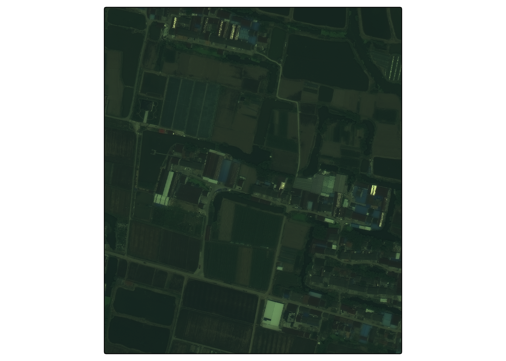

library(ceramic)
library(knitr)
library(raster)
library(sf)
library(spData)
library(terra)
library(tidyverse)
library(tmap)
theme_set(theme_minimal())Spatial Data
Readings 1 (Chapter 3), 2 (optional) (Chapter 2)
Preview
Spatial data come in two main formats: vector and raster. We’ll examine them in detail soon, but first let’s review the high-level distinction and give a few examples. We’ll also see how to read and write data to and from these formats.
Vector data formats are used to store geometric information, like the locations of hospitals (points), trajectories of bus routes (lines), or boundaries of counties (polygons). It’s useful to think of the associated data as being spatially enriched data frames, with each row corresponding to one of these geometric features.
Vector data are usually stored in
.geojson,.wkt,.shp, or.topojsonformats. Standard data.frames cannot be used because then important spatial metadata would be lost, like the Coordinate Reference System (to be explained in the fourth lecture this week).In R, these formats can be read using
read_sfin thesfpackage. They can be written using thewrite_sffunction. Here, we’ll read in a vector dataset containing the boundaries of lakes in Madison.
lakes <- read_sf("https://uwmadison.box.com/shared/static/duqpj0dl3miltku1676es64d5zmygy92.geojson")
lakes |>
dplyr::select(id, name, geometry)Simple feature collection with 10 features and 2 fields
Geometry type: POLYGON
Dimension: XY
Bounding box: xmin: -89.54084 ymin: 42.94762 xmax: -89.17699 ymax: 43.2051
Geodetic CRS: WGS 84
# A tibble: 10 × 3
id name geometry
<chr> <chr> <POLYGON [°]>
1 relation/1997948 Lake Monona ((-89.37974 43.0714, -89.37984 43.07132, -89…
2 relation/3361036 Lake Mendota ((-89.46885 43.08266, -89.46864 43.08258, -8…
3 relation/3447583 Upper Mud Lake ((-89.31364 43.04483, -89.31361 43.04464, -8…
4 relation/4090134 Hook Lake ((-89.33198 42.94909, -89.33161 42.94866, -8…
5 relation/4231143 Lake Wingra ((-89.4265 43.05514, -89.4266 43.05511, -89.…
6 relation/6183370 Lake Waubesa ((-89.32949 42.99166, -89.32908 42.99187, -8…
7 relation/7083727 Lake Kegonsa ((-89.2648 42.9818, -89.26399 42.98126, -89.…
8 relation/9668475 Lower Mud Lake ((-89.28011 42.98486, -89.2794 42.98481, -89…
9 way/21415784 Goose Lake ((-89.53957 42.97967, -89.53947 42.97955, -8…
10 way/28721778 Brazee Lake ((-89.18562 43.19529, -89.18533 43.19531, -8…#write_sf(lakes, "output.geojson", driver = "GeoJSON")We’ll discuss plotting soon, but for a preview, this is how you can visualize the lakes using tmap.
lakes <- lakes |>
group_by(id) |>
mutate(
longitude = st_coordinates(geometry)[1, 1],
latitude = st_coordinates(geometry)[1, 2]
)
tm_shape(lakes) +
tm_polygons(col = "#00ced1")
- There is a surprising amount of public vector data available online. Using this query1, I’ve downloaded locations of all hospital clinics in Madison.
#| label: read-clinics
clinics <- read_sf("https://uwmadison.box.com/shared/static/896jdml9mfnmza3vf8bh221h9hlvh70v.geojson")
head(clinics)Simple feature collection with 6 features and 33 fields
Geometry type: POLYGON
Dimension: XY
Bounding box: xmin: -89.52532 ymin: 43.06682 xmax: -89.32404 ymax: 43.12346
Geodetic CRS: WGS 84
# A tibble: 6 × 34
id `@id` `addr:city` `addr:housenumber` `addr:postcode` `addr:state`
<chr> <chr> <chr> <chr> <chr> <chr>
1 way/38117665 way/… Madison 8202 53717 WI
2 way/1022347… way/… Madison 675 53703 <NA>
3 way/1022368… way/… <NA> <NA> <NA> <NA>
4 way/1061019… way/… Madison 3706 53704 WI
5 way/1074632… way/… Madison 1500 53705 <NA>
6 way/1080657… way/… <NA> <NA> <NA> <NA>
# ℹ 28 more variables: `addr:street` <chr>, `addr:suite` <chr>,
# `addr:unit` <chr>, alt_name <chr>, amenity <chr>, brand <chr>,
# `brand:wikidata` <chr>, `brand:wikipedia` <chr>, building <chr>,
# `building:levels` <chr>, emergency <chr>, `gnis:feature_id` <chr>,
# healthcare <chr>, `healthcare:counselling` <chr>,
# `healthcare:speciality` <chr>, internet_access <chr>, layer <chr>,
# name <chr>, `name:en` <chr>, opening_hours <chr>, operator <chr>, … # how would you overlay the names of the clinics?
tm_shape(clinics) +
tm_dots(col = "red", size = 1)
Using this query, I’ve downloaded all the bus routes.
#| label: read-bus
bus <- read_sf("https://uwmadison.box.com/shared/static/5neu1mpuh8esmb1q3j9celu73jy1rj2i.geojson")
tm_shape(bus) +
tm_lines(col = "#bc7ab3", size = 1)
For the boundaries of the lakes above, I used this query.
Many organizations prepare geojson data themselves and make it publicly available; e.g., the boundaries of rivers or glaciers.
Raster Data
Raster data give a measurement along a spatial grid. You can think of them as spatially enriched matrices, where the metadata says where on the earth each entry of the matrix is associated with.
Raster data are often stored in
tiffformat. They can be read in using therastfunction in theterralibrary, and can be written usingwriteRaster.
shanghai <- rast("https://uwmadison.box.com/shared/static/u4na56w3r4eqg232k2ma3eqbvehfiaoq.tif")
#writeRaster(shanghai, "output.tiff", driver = "GeoTIFF")- Some of the most common types of public raster data are satellite images or derived measurements, like elevation maps. For example, the code below shows an image of a neighborhood outside Shanghai.
tm_shape(shanghai / 1636 * 255) + # rescale the max value to 255
tm_rgb()
|---------|---------|---------|---------|
=========================================
|---------|---------|---------|---------|
=========================================
|---------|---------|---------|---------|
=========================================
|---------|---------|---------|---------|
=========================================

There’s actually quite a bit of information in this image. We can zoom in…
::: {.cell}
bbox <- ext(121.66, 121.665, 30.963, 30.968)
shanghai_ <- crop(shanghai, bbox)
tm_shape(shanghai_ / 1636 * 255) +
tm_rgb()::: {.cell-output-display}  ::: :::
::: :::
Here are is data on elevation in Zion national park.
::: {.cell}
f <- system.file("raster/srtm.tif", package = "spDataLarge")
zion <- rast(f)
tm_shape(zion) +
tm_raster(palette = "PuBuGn") +
tm_layout(legend.position = c("left", "bottom"))::: {.cell-output-display}  ::: :::
::: :::
Installation
- A note about R packages: for historical reasons, spatial data libraries in R reference a few command line programs, like
gdalandproj. Since these command line programs are not themselves a part of R, they need to be installed before the corresponding R packages. The process will differ from operating system to operating system, and the experience can be frustrating, especially when the R packages don’t recognize the underlying system installation. I recommend following the instructions on this page and reaching out early if you have any issues.
Vector Data Formats
Vector data are used to store geometric spatial data. Specifically, there are 7 types of geometric information that are commonly used, as given in the figure below.

We can construct these geometric objects from scratch. For example, starting from the defining coordinates, we can use
st_point,st_linestring, andst_polygonto draw points, lines, and polygons.# make a point p <- st_point(c(5, 2)) plot(p)
# make a line linestring_matrix <- rbind(c(1, 5), c(4, 4), c(4, 1), c(2, 2), c(3, 2)) p <- st_linestring(linestring_matrix) plot(p)
# make a polygon polygon_list <- list(rbind(c(1, 5), c(2, 2), c(4, 1), c(4, 4), c(1, 5))) p <- st_polygon(polygon_list) plot(p)
Different geometries can be combined into a geometry collection, using
sfc.point1 <- st_point(c(5, 2)) point2 <- st_point(c(1, 3)) points_sfc <- st_sfc(point1, point2) plot(points_sfc)
Real-world vector datasets are more than just these geometries – they also associate each geometry with some additional information about each feature. We can add this information to the geometries above by associating each element with a row of a data.frame. In R, this this merging is accomplished by
st_sf, usinggeometryto associate a rawst_geoma row of a data.frame.lnd_point <- st_point(c(0.1, 51.5)) lnd_geom <- st_sfc(lnd_point, crs = 4326) lnd_attrib = data.frame( name = "London", temperature = 25, date = as.Date("2017-06-21") ) lnd_sf = st_sf(lnd_attrib, geometry = lnd_geom)To visualize vector data, we can use the tmap package. Like ggplot2, this package allows us to layer multiple visual encodings, but this time specialized to different types of geospatial data.
Vector data can be directly plotted using base R. For example, suppose we want to plot the boundaries of India, within its local context. Each row of the
worldobject below contains both the boundary of a country (in thegeomcolumn) and information about its location and population characteristics.data(world) head(world)Simple feature collection with 6 features and 10 fields Geometry type: MULTIPOLYGON Dimension: XY Bounding box: xmin: -180 ymin: -18.28799 xmax: 180 ymax: 83.23324 Geodetic CRS: WGS 84 # A tibble: 6 × 11 iso_a2 name_long continent region_un subregion type area_km2 pop lifeExp <chr> <chr> <chr> <chr> <chr> <chr> <dbl> <dbl> <dbl> 1 FJ Fiji Oceania Oceania Melanesia Sove… 1.93e4 8.86e5 70.0 2 TZ Tanzania Africa Africa Eastern … Sove… 9.33e5 5.22e7 64.2 3 EH Western S… Africa Africa Northern… Inde… 9.63e4 NA NA 4 CA Canada North Am… Americas Northern… Sove… 1.00e7 3.55e7 82.0 5 US United St… North Am… Americas Northern… Coun… 9.51e6 3.19e8 78.8 6 KZ Kazakhstan Asia Asia Central … Sove… 2.73e6 1.73e7 71.6 # ℹ 2 more variables: gdpPercap <dbl>, geom <MULTIPOLYGON [°]>This makes the plot, using
dplyrto filter down to just the row containing the India geometry.india_geom <- world |> filter(name_long == "India") |> st_geometry() plot(india_geom)
Alternatively, we can use the
tmappackage,bbox <- c(60, 5, 110, 40) tm_shape(india_geom) + tm_polygons()
Like
ggplot2,tmapbuilds packages from sets of basic layers for all vector formats,- Data:
tm_shapesets up the raster or vector data to be used in subsequent layers. - Points:
tm_dots()draws dots at spatial points,tm_markers()draws Google Map-style markers,tm_squares()draws small squares. - Lines:
tm_lines()draws spatial line vectors. - Polygons:
tm_polygons()draws polygon vectors,tm_fill()draws polygons with the border removed,tm_borders()draws polygons with only the border.
There are other layers for more specialized contexts, like adding text labels or iso-contour lines.
- Data:
Often, we want to layer on several vector objects.
tmapmakes this possible in a ggplot2-like syntax. To change the coordinates of the viewing box, we can set thebbox(bounding box) argument.world_asia <- world |> filter(continent == "Asia") bbox <- c(60, 5, 110, 40) tm_shape(world_asia, bbox = bbox) + tm_polygons(col = "white") + tm_shape(india_geom) + tm_polygons()
We can also encode data that’s contained in the vector dataset.
tm_shape(world_asia, bbox = bbox) + tm_polygons(col = "lifeExp") + tm_polygons()
All the encoding channels we are used to modifying through ggplot2 (like color, linetype, and size) can also be modified through these tmap commands, though note, there is no intermediate aesthetic encoding function.
Raster Formats
The raster data format is used to store spatial data that lie along regular grids. The values along the grid are stored as entries in the matrix. The raster object contains metadata that associates each entry in the matrix with a geographic coordinate.
Since the data they must lie along a regular grid, rasters are most often used for continuously measured data, like elevation, temperature, population density, or landcover class.
We can create a raster using the
rastcommand. The code block below loads an elevation map measured by the space shuttle.f <- system.file("raster/srtm.tif", package = "spDataLarge") zion <- rast(f)Typing the name of the object shows the metadata associated with it (but not the actual grid values). We can see that the grid has 457 rows and 465 columns. We also see its spatial extent: The minimum and maximum longitude are both close to -113 and the latitudes are between 37.1 and 37.5. A quick google map search shows that this is located in Zion national park.
zionclass : SpatRaster size : 457, 465, 1 (nrow, ncol, nlyr) resolution : 0.0008333333, 0.0008333333 (x, y) extent : -113.2396, -112.8521, 37.13208, 37.51292 (xmin, xmax, ymin, ymax) coord. ref. : lon/lat WGS 84 (EPSG:4326) source : srtm.tif name : srtm min value : 1024 max value : 2892plot(zion)
In contrast, the
rastercommand lets us create raster objects from scratch. For example, the code below makes a raster with increasing values in a 6 x 6 grid. Notice that we had to give a fake spatial extent.test <- raster( nrows = 6, ncols = 6, res = 0.5, xmn = -1.5, xmx = 1.5, ymn = -1.5, ymx = 1.5, vals = 1:36 ) plot(test)
Real-world rasters typically have more than one layer of data. For example, you might measure both elevation and slope along the same spatial grid, which would lead to a 2 layer raster. Or, for satellite images, you might measure light at multiple wavelengths (usual RGB, plus infrared or thermal for example).
Multi-layer raster data can be read in using
rast. You can refer to particular layers in a multi-layer raster by indexing.f <- system.file("raster/landsat.tif", package = "spDataLarge") satellite <- rast(f) satellite # all 4 channelsclass : SpatRaster size : 1428, 1128, 4 (nrow, ncol, nlyr) resolution : 30, 30 (x, y) extent : 301905, 335745, 4111245, 4154085 (xmin, xmax, ymin, ymax) coord. ref. : WGS 84 / UTM zone 12N (EPSG:32612) source : landsat.tif names : landsat_1, landsat_2, landsat_3, landsat_4 min values : 7550, 6404, 5678, 5252 max values : 19071, 22051, 25780, 31961satellite[[1:2]] # only first two channelsclass : SpatRaster size : 1428, 1128, 2 (nrow, ncol, nlyr) resolution : 30, 30 (x, y) extent : 301905, 335745, 4111245, 4154085 (xmin, xmax, ymin, ymax) coord. ref. : WGS 84 / UTM zone 12N (EPSG:32612) source : landsat.tif names : landsat_1, landsat_2 min values : 7550, 6404 max values : 19071, 22051Base R’s
plotfunction supports plotting one layer of a raster at a time. To plot more than one layer in a multichannel image (like ordinary RGB images) you can use theplotRGBfunction.plotRGB(satellite, stretch = "lin")
Sometimes, it’s useful to overlay several visual marks on top of a raster image.
satellite <- project(satellite, "EPSG:4326") point <- data.frame(geom = st_sfc(st_point(c(-113, 37.3)))) |> st_as_sf() tm_shape(satellite) + tm_raster() + tm_shape(point) + tm_dots(col = "blue", size = 5)
If we want to visualize just a single layer, we can use
tm_rgbwith all color channels set to the layer of interest. Note that, here, I’ve rescaled the maximum value of each pixel to 255, since this is the default maximum value for a color image.tm_shape(satellite / max(satellite) * 255) + tm_rgb(r = 1, g = 1, b = 1)
Exercise: Are the following datasets in vector or raster formats? If they are in vector data format, explain which types of geometries it contains (e.g., point or linestring).
Coordinate Reference Systems
An important subtlety of geographic data visualization is that all our maps are in 2D, but earth is 3D. The process of associated points on the earth with 2D coordinates is called « projection. » All projections introduce some level of distortion, and there is no universal, ideal projection.
Here are a few examples of famous global projections. There are also many projections designed to give optimal representations locally within a particular geographic area.
This means that there is no universal standard for how to represent coordinates on the earth, and it’s common to find different projections in practice. For example, the block below shows how North America gets projected according to two different CRSs.
# some test projections, don't worry about this syntax miller <- "+proj=mill +lat_0=0 +lon_0=0 +x_0=0 +y_0=0 +ellps=WGS84 +datum=WGS84 +units=m +no_defs" lambert <- "+proj=lcc +lat_1=20 +lat_2=60 +lat_0=40 +lon_0=-96 +x_0=0 +y_0=0 +ellps=GRS80 +datum=NAD83 +units=m +no_defs" north_america <- world |> filter(continent == "North America") tm_shape(st_transform(north_america, miller)) + tm_polygons()
tm_shape(st_transform(north_america, lambert)) + tm_polygons()
Both vector and raster spatial data will be associated with CRS’s. In either
sforrasterobjects, they can be accessed using thecrsfunction.A common source of bugs is to use two different projections for the same analysis. In this class, we will always use the EPSG:4326 projection, which is what is used in most online maps. But in your own projects, you should always check that the projections are consistent across data sources. If you find an inconsistency, it will be important to « reproject » the data into the same CRS.
Interactivity and Spatial Data
Selection
- It’s natural to use maps to select regions of interest. We may also need extra pan and zoom functionality to make the most of very high-resolution spatial data.
33.\(^\dagger\) Mosaic vgplot is especially well-suited to selection interactions. We need two main changes from our previous mosaic visualizations.
- We make sure our coordinator loads the spatial data input. This isn't
enabled by default and requires us to first call
`vg.loadExtension("spatial")`, which makes the spatial database tools
available. We can then load typical vector data formats using
`vg.loadSpatial()`.
- We use `vg.geo()` to encode vector data. This layer is analogous to
`vg.dot()` or `vg.line()` for dot or line plots, for example.
It's not as common, but if we ever want to customize the CRS, we have to use
`vg.projectionType()`.
1.The block below loads data that will be used in the examples below. Note that
the county geometry data is separate from the original unemployment rates. The
code below manually joins these into a new table called combined. We could have
alternatively joined these tables elsewhere and then directly loaded the spatial
data with unemployment information baked in.- Let’s build an example that allows us to make a choropleth map where counties can be interactively selected by their unemployment level. The first step is to define a static version. Fill ensures that the unemployment rate appears as color in the map, and title ensures that hovering over the counties reveals their name. Some of the counties have much higher unemployment than others, and if we had used a standard linear scale, then those colors would dominate the color scale (some outlier counties would be dark, everything else would be fait). To get around this, we use a quantized scale Where color shifts at discrete cut points.
vg.vconcat(
vg.colorLegend({for: "county-map", label: "Unemployment (%)"}),
vg.plot(
vg.geo(
vg.from("combined"),
{fill: "rate", title: "name"}
),
vg.name("county-map"),
vg.colorScale("quantile"),
vg.colorN(9),
vg.colorScheme("blues"),
vg.projectionType("albers-usa")
)
);Next, let’s link this map with a histogram of the unemployment rates. This doesn’t actually add too much to the visualization because we can already see unemployment directly on the plot. However, it can still be useful for noticing differences within the color bins, especially the outliers.
- We build the unemployment histogram using
vg.rectYand setting the x-axis to be the binned rate. - We draw two maps, one that only will show the counties that have been brushed in the histogram and another grayed-out one that serves as the “context” in a focus-plus-context view. These are the two calls to
vg.geo. - Finally, we enable brushing by defining a reactive selection object called
$range. It reacts to user inputs throughintervalX, andfilterByin the secondvg.geocall ensures that only the selected subset of the map is drawn in the “focus.”
One subtlety is that in this interactive version, we need to manually set the breakpoints in the quantile scale. If we omit this, then the color scale adapts every time we move the brush. This is analogous to fixing the x and y-axis scales in our earlier weather example.
- We build the unemployment histogram using
range = vg.Selection.intersect()
vg.hconcat(
// make the histogram
vg.plot(
vg.rectY(
vg.from("combined"),
{x: vg.bin("rate"), y: vg.count(), fill: "#c8c8c8"}
),
vg.intervalX({as: range}),
vg.xLabel("Unemployment (%)"),
vg.width(300),
vg.height(300)
),
vg.vconcat(
// make the map and its legend
vg.colorLegend({for: "county-map-brush", label: "Unemployment (%)"}),
vg.plot(
vg.geo(
vg.from("combined"),
{fill: "none", stroke: "#eee"}
),
vg.geo(
vg.from("combined", {filterBy: range}),
{fill: "rate"}
),
vg.name("county-map-brush"),
// define a stepped color scale
vg.colorScale("threshold"),
vg.colorDomain([3.2, 3.8, 4.4, 4.8, 5.2, 5.7, 6.5, 7.6]),
vg.colorScheme("blues"),
// specify the CRS
vg.projectionType("albers-usa"),
vg.width(500),
vg.height(300)
)
)
);Rasters
The machinery for working with raster data in Mosaic is not as mature as that for working with vector data. It’s not possible to work with multiband rasters like those we would need for a full-color satellite image. However, working with one layer at a time is easy and can be done using the
vg.rastercommand.A technical detail is that for the raster data to be read in properly, it needs to be formatted in long form. That is, it can’t just be a matrix of raster values. It has to have \(x\)-coordinate, \(y\)-coordinate, and value-at-that-coordinate columns.
zion_df <- as.data.frame(zion, xy = TRUE) names(zion_df) <- c("x", "y", "elevation") write.csv(zion_df, "data/zion_elevation.csv", row.names = FALSE)The visual encoding channels are all relatively straightforward. One subtlety about raster data is that we may want to change the resolution. Increasing pixel size will reduce the resolution of the plot, which can be helpful if we want to speed up loading on slow internet connections. Alternatively, we might want to increase the resolution through interpolation. That requires the use of the
interpolateandbandwidtharguments.
vg.plot(
vg.raster(
vg.from("zion"),
{
x: "x",
y: "y",
fill: vg.max("elevation"),
interpolate: "nearest",
bandwidth: 0,
pixelSize: 1
}
),
vg.colorScheme("puBuGn"),
vg.margin(0),
vg.width(500),
vg.height(500)
);Footnotes
It can be constructed easily using the wizard↩︎